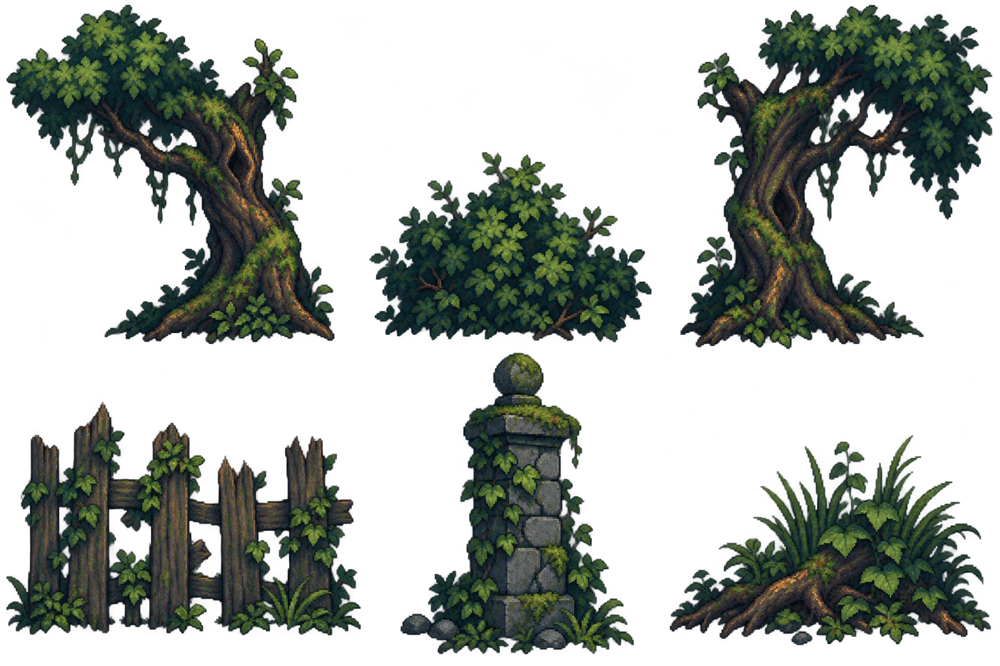
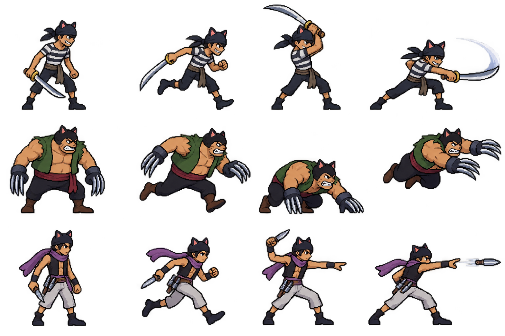
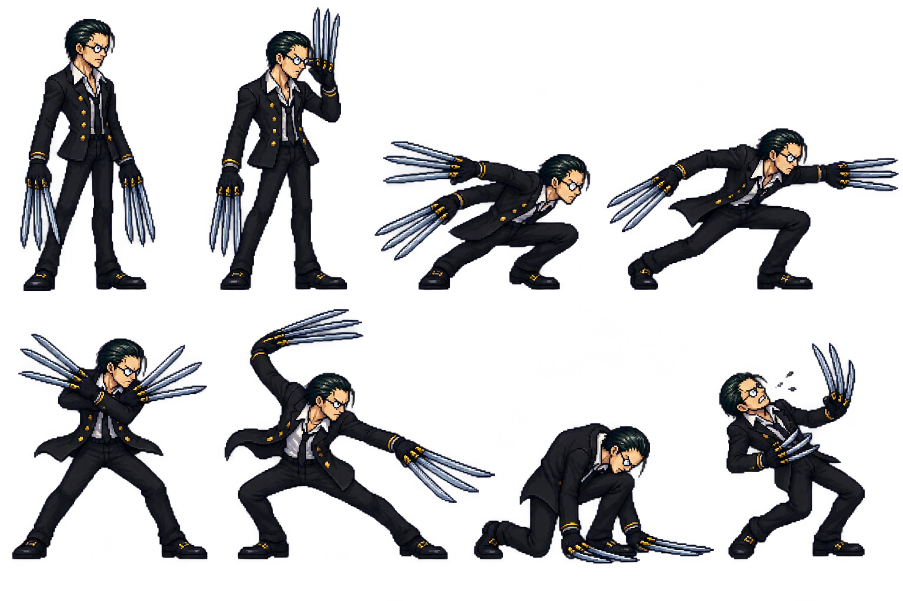

Woodland paths, village rooftops, and Captain Kuro. Move your pointer over the scene to inspect the sky and village layers. This is an asset preview; the new stage is not playable yet.
Woodland foreground props
Two trees, bush, broken fence, gatepost, and roots. Source sheet with alpha; individual props need extraction.

Black Cat pirates
Cutlass fighter, claw brawler, and knife thrower. Four key poses each.

Captain Kuro
Eight combat poses, including glasses tell, claw lunge, double slash, and recovery. Wide attacks require individual frame extraction.
